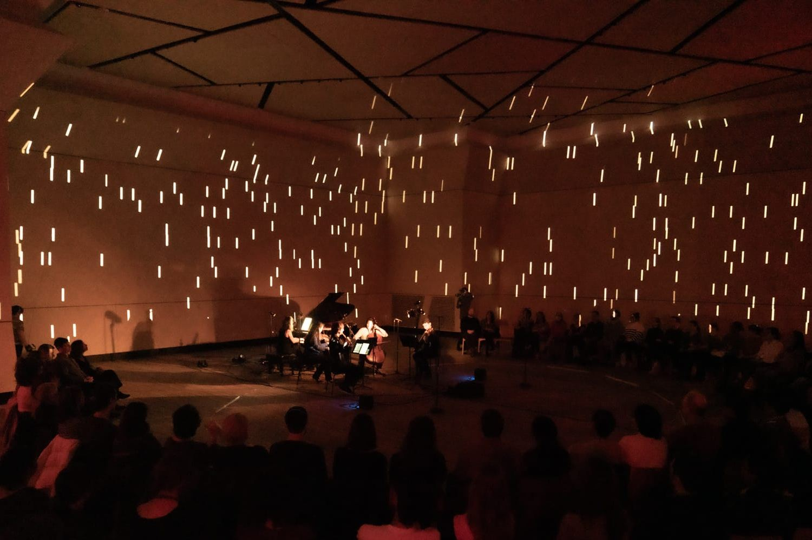

CreArtBox
Nueva York, desde 2013. Colectivo de música de cámara. Co-fundadora y directora.
CreArtBox nació en 2013 en Nueva York, fundado con el flautista y compositor Guillermo Laporta. La idea era sencilla y sigue siendo la misma: que un concierto pueda ser también algo que se mira. Tocamos el gran repertorio y encargamos obra nueva a compositores vivos, y montamos las dos cosas en producciones que incorporan artes visuales, proyección y una cierta teatralidad.
El colectivo programa la serie CreArt Music en Manhattan, el festival CreArt Music en Queens y el programa educativo CreArtED, que lleva conciertos didácticos a colegios y centros comunitarios.
Uno de los objetivos desde el principio ha sido dar trabajo digno a artistas profesionales y, al mismo tiempo, que el precio de la entrada no sea la razón por la que alguien no entra.
The New Yorker lo ha incluido entre sus recomendaciones de arte y música, y Time Out lo ha descrito como un ensemble dedicado a los eventos multidisciplinares.
